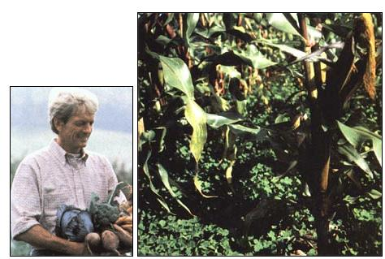
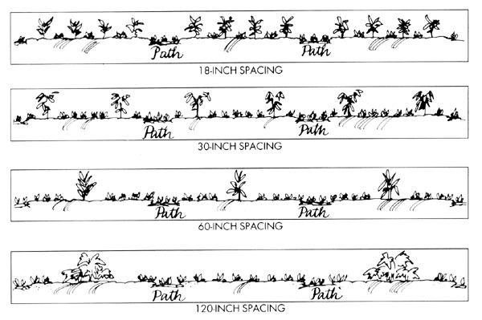

An ingenious market gardener has worked out a way to grow food and cover crops-at the same time.
Eliot Coleman, farm manager of Milton Academy's Mountain School Program in Vermont, has been a leading practitioner of organic growing for 20 years. This fall brings the publication of his first book, The New Organic Grower-a treatise of growing techniques that's the best market-gardening guide we've seen in many a year. Coleman's book has much useful information that can be adapted to home gardens as well, such as the following excerpt on innovative ways to combine both soil-building and edible crops.
|
 As Coleman's planting of core undersown with sweet clover shows, gardeners can have their food and soil fertility too. |
 |
|